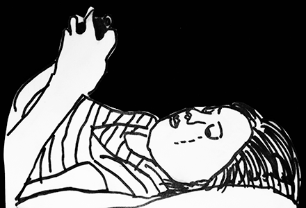

Young people told us that the three main things they want from their friends are:
You don't have to be an expert to help
It's important to set boundaries with your friend who needs support. This includes:
Above all, you have to keep yourself safe and never put yourself in danger to help a friend!
It's important to understand what professionals are there to give and where a friend’s responsibilities end. We have provided links for ways to get anonymous help and more specific help from services locally at the end.
Be mindful that isolation from family and friends could be part of the problem. This is particularly the case if your friend is experiencing mental health problems. Shutting themselves away could be how they deal with things.
Also, isolation from friends or family could be something your friend is not choosing. Someone else might be stopping them from seeing certain people.
I've definitely been judged by my actions or for things I had no control over.
Let your friend make decisions about their own life. That includes what to tell, who to tell, when to get help etc.
Gave me appropriate advice when I needed it.
It's somebody you can talk to. And you know they won’t report it to the police or tell a teacher.
It's important to remember that everyone finds different things helpful when they are going through a difficult situation. This is okay.
Here’s what young people told us that their friends did, both good and bad.
Calmed me down, told me this wasn’t the end
Allowed me to talk through things or provided me with distractions
Ignored or dismissed an issue, so that I felt unjustified in my anxieties/feelings.
Some people just prefer to be left alone to deal with their problems in their own time. One young person who responded to our survey said, I like alone time too. Another said, meeting new people scares me, teenagers can be judgemental.
Don't take it personally if a friend doesn’t always want to talk to you about something.
I like alone time too!
Meeting new people scares me, teenagers can be judgemental!
Sometimes if your friends have really serious issues they may have missed school for a long time. If this is the case, it can be really difficult for them to start coming back.
But there are some things you can do to help:
“Being bullied by my whole year group, it just destroyed me and made it very difficult to see a good future for myself.”
Dealing with difficult situations is a process for everyone involved – for both the person receiving and giving support.
The best support will:
When you feel like it’s time to get help from someone else, here's where you can go:
CHILDLINE www.childline.org.uk Freephone: 0800 1111 (24 hours)
Free, anonymous, confidential and for any issue
SAMARITANS www.samaritans.org
Tel: 08457 90 90 90 (24 hrs 7 days a week)
Confidential and nonjudgmental for emotional distress
FRANK www.talktofrank.com
Freephone: 0800 77 66 00 (24 hour, free from a landline)
Non-judgmental information about drugs and alcohol, translation for non-English speakers
B-EAT www.b-eat.co.uk
Tel: 0845 634 7650 (Mon to Fri evenings from 4.30pm to 8.30pm and Saturdays 1.00pm - 4.30pm)
Email: fyp@b-eat.co.uk
Information and support for young people around eating disorders and body image
YOUNG MINDS www.youngminds.org.uk
Lots of information about young people’s mental health, including self-care, peer support and other places to get help
This resource was researched, developed and written by CJ Hamilton and Kirsche Walker.
We first trained as Health Advocates on the AYPH Be Healthy project and are now working together to promote young people’s voices in child sexual exploitation services and beyond.
See all that we’ve done and follow us: